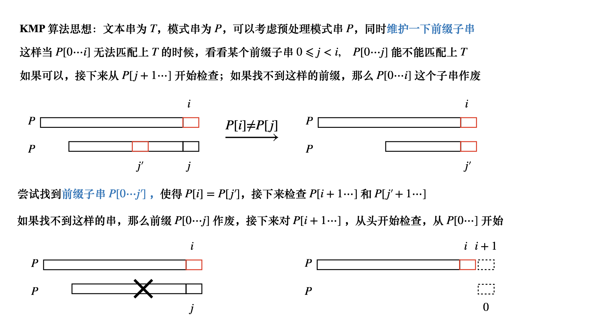
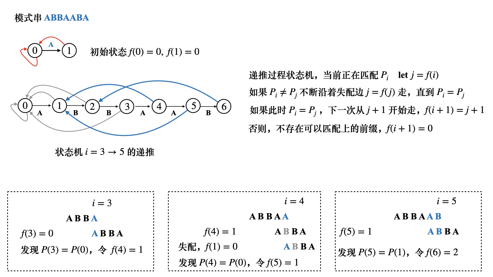

KMP 算法

失配函数计算，根据之前的分析，对于某个位置P(i) 和T[⋯k⋯] 失配
尝试去匹配前缀子串P[0⋯i−1]，预处理失配函数，即尝试让串P 自己匹配自己
- f(i)=j 表示在P(i) 处失配时，应该跳到前缀的哪个位置
如果下标从0 开始，j 表示状态机上已经匹配了j 个字符，即前缀[0⋯j−1]
即对于当前位置P(i)，尝试给P(i) 匹配P(j) - f(i)=j，可以根据j 来建立状态机，状态机节点编号j，同样表示已匹配前缀[0⋯j−1]
如果下标从0 开始，还可以表示当前尝试匹配P(i),P(j) - 算法设计如下，遍历P，对于P(i)，其失配后应该要跳到j=f(i) 处
- 如果P(j)=P(i)，不断地往失配边走，即不断地令j′←f(j)
直到P(j′) 和P(i) 匹配上 - 如果找不到这样的j′，那么接下来应该从0 开始重新匹配
- 可以发现一个递推结构，即进行第i 次匹配的时候，我们可以知道第i+1 次应该从哪里匹配
- P(i)=P(j′)，那么第i+1 次匹配应该考虑j′+1，即f(i+1)=j′+1
- 如果找不到这样的j′，即j′=0 仍然有P(i)=P(j′)，令f(i+1)=j′

有了失配函数，主算法就比较好理解了
- j=0，表示最开始在模式串P(0) 处
- 遍历文本串T，对于位置T(i)
- 如果T(i)=P(j)，那么就不断沿着失配边j←f(j) 走，直到匹配为止
- 如果T(i)=P(j)，那么j←j+1
- 如果循环中j 走完了模式串，即j=length(P)，那么成功匹配
此时T[i−m+1,i] 就是文本串和模式串匹配上的部分，退出循环
如果i 遍历完整个T 之后，j=length(P)，那么整个串都无法和P 匹配
1
2
3
4
5
6
7
8
9
10
11
12
13
14
15
16
17
18
19
20
21
22
23
24
25
| const int maxn = 1e5 + 10;
int f[maxn];
void getFail(const char *P) {
int n = strlen(P);
f[0] = 0, f[1] = 0;
for (int i = 1; i < n; i++) {
int j = f[i];
while (j && P[j] != P[i]) j = f[j];
f[i+1] = (P[j] == P[i] ? j+1 : 0);
}
}
vector<int> ans;
void KMP(const char *T, const char *P) {
int n = strlen(T), m = strlen(P);
getFail(P);
int j = 0;
for (int i = 0; i < n; i++) {
while (j && T[i] != P[j]) j = f[j];
if (T[i] == P[j]) j++;
if (j == m) ans.push_back(i-m+1);
}
}
|
 微信
微信 支付宝
支付宝